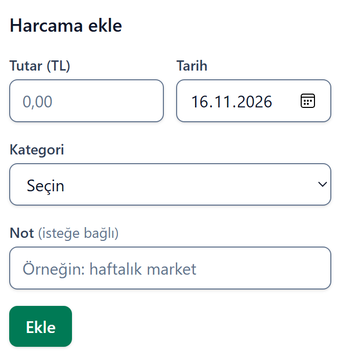
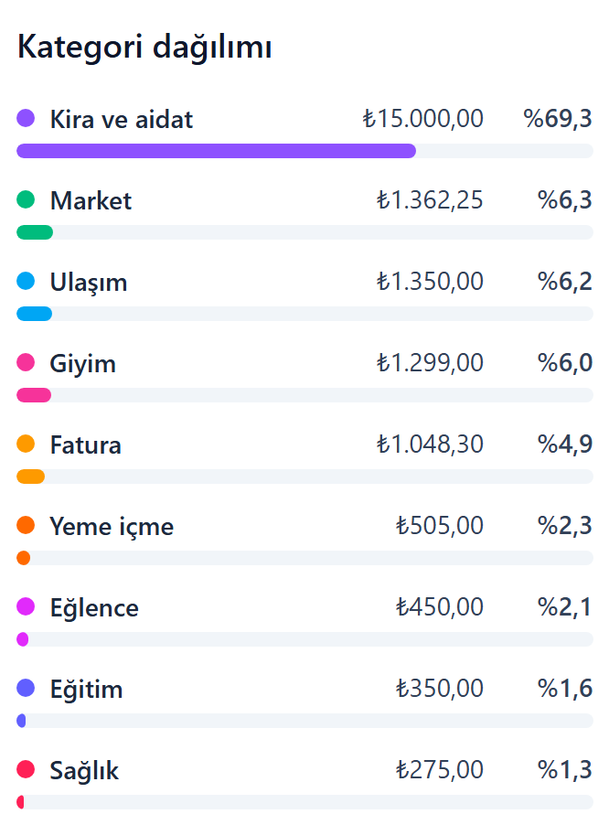

Harcama takibi nasıl yapılır? 5 adımda ayın resmi
Ay bitiyor, hesapta beklediğinizden az para kalıyor ve nereye gittiğini tam hatırlamıyorsunuz. Harcama takibi bu soruya cevap verir. Bunun için karmaşık tablolar ya da banka şifresi gerekmez. Aşağıdaki 5 adım, ayın resmini sade bir düzenle çıkarmanızı sağlar.
1. Harcama takibi için tek bir yer seçin
Notlar, mesajlar, fişler ve banka bildirimleri arasında dağılan harcama kaybolur. İlk adım, her harcamanın gideceği tek bir yer seçmektir.
Bu yer bir defter, bir tablo ya da Harcama Takip Paneli olabilir. Panel tarayıcıda açılır; hesap ya da kurulum istemez. Verileriniz yalnız tarayıcınızda kalır ve hiçbir sunucuya gönderilmez. Bunun bir bedeli var: veriler telefon ile bilgisayar arasında eşitlenmez ve tarayıcının site verisi silinirse gider. Ay sonunda indirdiğiniz CSV dosyası yedeğiniz olur.
Hangi yeri seçerseniz seçin, kuralı aynı tutun: her harcama oraya gider. İki ayrı listeyle başlamak, ay sonunda iki ayrı yarım resim demektir.
2. Harcamayı aynı gün ekleyin
Bir harcamayı akşam hatırlamak kolaydır, bir hafta sonra zordur. Bu yüzden harcamayı yaptığınız gün ekleyin.
Panelde bir harcama dört bilgiyle girilir: tutar, tarih, kategori ve isteğe bağlı bir not. Tutarı alıştığınız gibi yazabilirsiniz, örneğin "1.250,50". Ekledikten sonra kategori ve tarih dolu kalır. Aynı günün ikinci harcaması böylece daha hızlı girilir.

Not alanını kısa tutun. "Haftalık market" ya da "Doğum günü hediyesi" gibi bir not, ay sonunda harcamayı tanımanıza yeter.
Nakit harcamaları özellikle aklınızda tutun. Kartla ödenen harcamanın bir izi kalır, nakitte bu iz yoktur. Cebinizden çıkan parayı da aynı akşam panele yazın; ayın resmi ancak böyle tamamlanır.
Bir harcamayı yanlışlıkla silerseniz "Geri al" düğmesi onu geri getirir. Düğme 6 saniye ekranda kalır; imleç ya da klavye odağı üzerindeyken süre işlemez.
3. Her harcamaya bir kategori verin
Ayın resmini kategoriler çizer. Market, kira, ulaşım ve faturalar ayrı durduğunda hangi alanın büyüdüğünü görürsünüz.
Panelde 10 kategori vardır: Market, Yeme içme, Ulaşım, Fatura, Kira ve aidat, Sağlık, Eğlence, Giyim, Eğitim ve Diğer. Bir harcama iki kategoriye de uyuyorsa sizin için anlamlı olanı seçin. Önemli olan, aynı tür harcamayı her seferinde aynı yere koymaktır.
Örneğin marketten aldığınız deterjanı bir ay "Market", bir ay "Diğer" altına yazarsanız iki kategori de yanlış görünür. Bir kez karar verin ve o kararı sürdürün.
4. Ayın resmine haftada bir bakın
Kayıt tutmak işin yarısıdır; asıl fayda, kayda bakınca gelir. Haftada bir, örneğin pazar akşamı, 5 dakika ayırın.
Panelin üst kısmında ayın toplamı, harcama sayısı, günlük ortalama ve en çok harcanan kategori görünür. Kategori dağılımı kartı her kategorinin payını gösterir. Paylar tek ondalıkla yazılır ve toplamı tam %100,0 eder. Çok küçük bir pay bile kaybolmaz, "<%0,1" olarak görünür.

Bu bakışta kendinize kısa sorular sorun:
- Beni şaşırtan bir kategori var mı?
- Geçen haftaya göre hangi kategori büyüdü?
- Bu hafta ertelediğim bir ödeme var mı?
Cevaplardan biri sizi düşündürüyorsa o kategorideki son harcamalara göz atın. Listeyi kategoriye göre süzebilir, tutara göre sıralayabilirsiniz.
5. Aylık bütçe belirleyin ve harcama takibini ona bağlayın
Bütçe, harcamaya bir sınır koymaktan çok ayın planını görünür kılmaktır. Panele bir aylık bütçe yazdığınızda ilerleme çubuğu, kalan tutar ve kullanılan yüzde görünür.
Harcama bütçenin %80'ine ulaştığında panel "Bütçenin sonuna yaklaştınız" der. Bu, ayın kalanını planlamak için iyi bir andır. Bütçe aşılırsa panel aşımı açıkça yazar. Kimseyi suçlamaz, yalnız durumu gösterir.
Bütçeyi ilk ay tahminle belirlemek doğaldır. Ay sonunda kategori dağılımına bakıp gelecek ayın bütçesini gerçek harcamaya göre düzeltin.
Bütçeyi değiştirmek bir başarısızlık değildir. Plan, hayatınız değiştikçe onunla birlikte değişir. Önemli olan, ay boyunca nerede durduğunuzu bilmektir.
Ay sonunda listeyi saklayın
Ay bittiğinde ekrandaki listeyi CSV dosyası olarak indirebilirsiniz. Dosya Türkçe ayarlı Excel için hazırlanır ve tutarlar virgüllü ondalıkla gelir. Böylece ayları yan yana koyup karşılaştırabilirsiniz.
Kısaca
- Harcamaları tek bir yerde toplayın.
- Her harcamayı aynı gün, bir kategoriyle ekleyin.
- Haftada bir 5 dakika ayın resmine bakın.
- Aylık bütçe belirleyin ve %80 uyarısını bir hatırlatma olarak kullanın.
Harcama takibine bugün başlamak için Harcama Takip Paneli'ni açın. Önce denemek isterseniz örnek verilerle açın.
Bu içerik genel bilgi verir; finansal ya da yatırım tavsiyesi değildir.